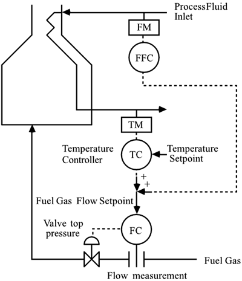

| [ Team LiB ] |
|
10.10 Combined Feed-Forward and CascadeIn Section 10.6, a fired heater was used to provide motivation for feed-forward control. In the example it was assumed that the fuel gas flow was directly manipulated. In practice a flow controller would be used, resulting in the feed-forward, feedback, and cascade-control strategy shown in Figure 10-17. Figure 10-17. Feed-forward, feedback, and cascade control of a fired heater. Notice that each "mode" is used to reject a different type of disturbance. The feed-forward controller is used to reject feed flow rate disturbances. The fuel gas flow controller is used to reject disturbances in the fuel gas header pressure. The temperature controller plays a role in compensating for all disturbances. See Exercise 19 for a numerical example. A common process that combines feed-forward/feedback and cascade control is a steam drum. See Module 9 for a case study of steam drum level control. |
| [ Team LiB ] |
|